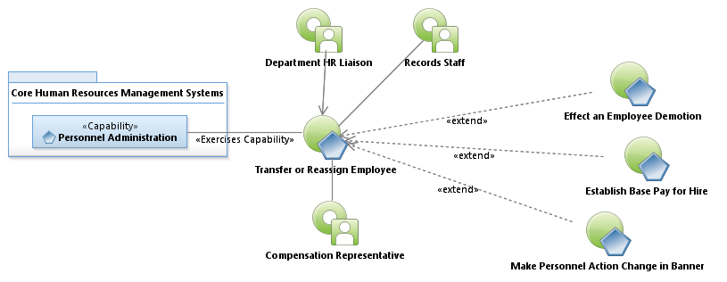

Activity Model: Transfer or Reassign Employee Job

Use Case Model: Transfer or Reassign Employee Job
Architect: Aaron Brown, IT Enterprise Architect Senior
Date Last Modified: 09/02/2012
User Review: First Last, Title
Date: mm/dd/yyyy
A change in position either voluntary or by the employee, applying for a new position, or involuntary, by management, based upon business need or a reduction in force, where the employee may be assigned to a new position. Transferred employees can be within division or transferred to another department.
Follow link to Role Definitions

Use Case Model: Transfer or Reassign Employee Job
Activity Model: Transfer or Reassign Employee Job
Activity Documentation
| Activity | Documentation |
|---|---|
| Prepare Personal Action Form | The Department HR Liaison has been instructed by management or appropriate leadership, that a job reassignment should take place. The Business Case Letter includes the position title. The Liaison provides the Class and Job codes on the Personal Action Form (PAF). The "Reassignment" box is checked on the PAF. |
Note: When the activity is self explanatory no documentation is provided.